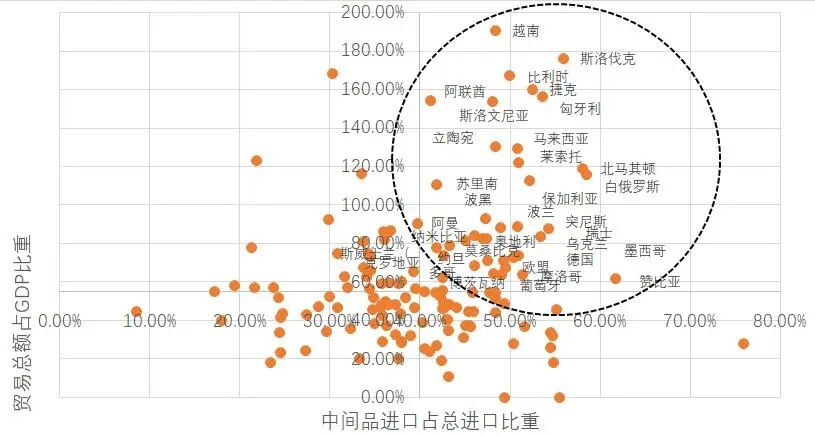
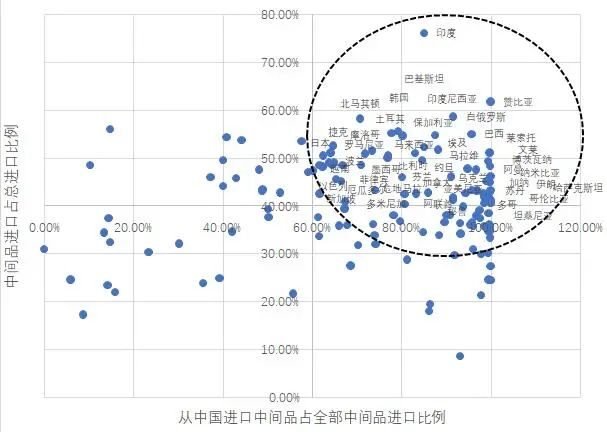

疫情引发连环熔断，全球股灾何时平息？
原文链接 备份链接 “现在没有系统性的不平衡，我们更像是突然被流星撞击，只不过撞击我们的是病毒，不是流星” 文 |《财经》特派记者 金焱 发自华盛顿 编辑 | 苏琦 3月16日再成“黑色星期一”，全球股市又现连环熔断。3月16日美股触发 …

全球疫情的进一步扩散，将对全球经济带来较大的冲击，而由于国际局势已经与全球金融危机爆发时大为不同，全球合作的前景不容乐观，新冠疫情有可能随之会给全球经济带来第四次冲击波

文 | 何帆 朱鹤 许佩玉 黄婉菁
新冠病毒已经在全球范围内蔓延，世界卫生组织将其定性为“全球流行病（pandemic）”。虽然数个疫情比较严重的国家开始采取比较强力的防控措施，包括限制人员流动、关闭商业机构、员工在家办公等，但多数国家仍然处于防控的初期阶段，各项措施尚未到位。这势必会影响全球疫情的进一步扩散，也将对全球经济带来较大的冲击。
从目前来看，新冠疫情对全球经济带来的冲击主要有三个方面：供给扰动、需求冲击和资产负债表损失。这场疫情是否会带来一场全球范围内的经济危机，仍有待观察。但值得担忧的是，由于国际局势已经与全球金融危机爆发时大为不同，全球合作的前景不容乐观，新冠疫情有可能随之会给全球经济带来第四次冲击波：全球化退潮。面对新冠疫情带来的冲击，中国应提高警惕、预作准备，备足政策空间，或能减少本次疫情给中国经济带来的负面影响。
中国是首先爆发新冠疫情的国家，受此影响，各个行业的生产一度停滞。考虑到中国已经是全球第二大经济体，特别是中国经济与全球供应链的融合程度较高，这将给全球经济带来较大的供给冲击。
如何测算新冠疫情对全球供应链带来的供给冲击呢？一种直接的研究方法是利用国际投入产出表数据库来测算中国对全球经济的影响。从表面上看，这种方法最为直接、也最为系统，理应得出较为明确可信的结论，但在现实中，运用投出产出表方法可能会遇到各种困难。一是投入产出表中的数据并非实际的统计数据，在计算的过程中需要根据底层的投入产出模型进行大量的估算和推算，在这一过程中会存在大量的估算偏差。跨国投入产出表更是会面临这个问题，各国的统计标准差异会进一步放大投入产出表的误差。二是投入产出表是通过一组联立方程组找到的一种线性机制，而实际的经济机制大多是非线性的，且有大量的正反馈和负反馈效应。三是测算冲击水平的关键在于确定原始冲击的量级，但目前对原始冲击的评估信息是严重不足的。换言之，如果我们没办法相对准确的测度中国受到的冲击量级，我们也没办法估算对全球经济的冲击，而只能利用不同的情景假设。事实上，这正是为什么我们现在看到的各种测算疫情对全球经济影响的模型，大都只能停留在情景分析的层面。
我们试图从另一个角度，更为直接地测度新冠疫情对全球供应链带来的供给冲击。我们的研究思路是：通过原始而真实的国际贸易数据，找出那些更容易受到中国冲击的国家。这些国家进口了更多的中国产品，尤其是中间产品。进口中间品的目的是进入国内的生产环节，显然对该国生产的影响更为直接。找到了这些更容易受到冲击的国家之后，我们就可以根据这些国家的分布和规模，判断新冠疫情对全球供应链带来的供给冲击。
我们计算了世界各国中间品进口额占总进口额的比重、从中国进口的中间品占其全部中间品进口的比重以及各国贸易总额占GDP的比重。如果一国的前两个指标比较高，则说明该国对中国的中间品进口有较高的依赖度。在此基础上，若该国同时拥有较高的对外贸易依存度，则说明该国的整体经济对中国进口的依赖程度更高，进而表明该国在此次新冠疫情中会受到较大冲击。
如图所示，对国际贸易依赖程度更高、与国际供应链联系更强、且从中国进口中间品较多的国家大多都是发展中国家，几乎没有发达经济体。当然，在部分产业中有些发达国家和中国在生产和消费环节的联系非常紧密，如电子产业中以中日韩为核心形成了东亚生产体系，汽车产业中德国对中国的终端需求依赖度较高。

这种供给冲击会持续多久呢？虽然当前中国企业尚未完全复工复产，但从目前的进度来看，中国企业恢复到正常生产状态只是时间问题。供给冲击虽然来得最早，但也会最早消退。同时，值得指出的是，当前的全球供应链依然是围绕发达经济体展开的分工体系，而中国在全球供应链中的独特地位是其它新兴经济体无法替代的，因此，只要全球供应链没有出现系统性的危机，就没理由认为这种供给冲击会带来持续的影响。
然而，随着中国企业逐渐恢复到正常的生产状态，新的问题又会浮出水面。之前大家以为要加班生产的出口订单，都还在吗？
当前全球市场担心的问题早已不再是中国能否复工，而是新冠疫情对总需求的冲击。随着新冠疫情在全球范围内的扩散，各国政府被迫采取各种防疫措施，也引发了金融市场的担忧。全球多个股票市场连续暴跌。就连习惯于高估全球经济增速的IMF也表示，2020年全球经济会比2019年更差。
目前来看，对总需求冲击的判断比较困难，市场预期也比较混乱，主要原因在于全球各国的防疫抗疫理念有很大的差异，而且所采取的措施仍在不断变化。不同的防疫抗疫对策，带来对需求的冲击也会不同。
如果根据严格的程度，对各国防疫抗疫的对策做一个光谱，则中国在光谱的一个极端，美国的初期反应在另一个极端。由于有2003年SARS疫情的前车之鉴，所以中国从一开始就采取了包括封城、停产停课在内的严厉措施，这种抗疫模式能够较好地控制疫情，但由于抑制消费、限制人员流动，对需求带来的扰动也更大。韩国采取的对策和中国较为相近，效果也大体类似。反之，如果采取更为放任的对策，看似对经济的扰动更小，但疫情的扩散会更迅猛，后期需要用更多的补救措施，目前的意大利和伊朗就是这种情况。
许多国家最初的态度更接近美国而非中国，但从现有趋势看，越来越多的政府开始改变立场并朝着中国的方向移动，甚至美国政府也采取了更为严厉的应对措施。这意味着接下来防疫抗疫措施对总需求的抑制效应会越来越强。发达国家大多以第三产业为主，消费占GDP的比重更高，因此限制人员流动和关闭公共区域会对本国经济造成更大的冲击。对新兴经济体而言，发达国家需求下降意味着外需下降，国内经济压力自然增加。
随着疫情的发展，对需求影响更大的一个因素是各国对传染病的防控能力。发达国家已建立起相对完善的公共卫生医疗服务体系，拥有强大的基层医疗服务能力，其医疗体系的韧性和效率明显高于发展中国家。一旦这些国家开始意识到疫情的严重性，并全力启动传染病的防控体系，控制新冠疫情并不是一件困难的事情。而且，这些地区尚未出现集中爆发的情况，要比中国在疫情初期面临的治疗压力更小一些。
真正可能出现重大问题的是医疗卫生条件相对落后的发展中国家。我们利用世界卫生组织公布的全民健康覆盖指数（Universal health coverage index，简称UHC指数）来衡量各国的基础医疗能力。该指数的构建涉及多个方面，且受限于部分国家相关数据的可得性和真实性，并不能直接比较各国医疗水平。不过，相对于发达经济体，该指数更适合于衡量发展中国家，特别是欠发达国家的基础医疗状况。我们结合UHC指数和各国的贸易状况，综合评估各国面对的疫情风险敞口。
根据世界卫生组织提供的数据，中国的UHC指数大概是79。如果以此做为界定防控能力的分界点，那么除中国以外，所有UHC值不超过79的国家的贸易规模总和占全球贸易总额的比重约30%，这些国家在中国出口总额的比重大约是35%。也就是说，中国的外需中有三分之一左右的国家或许没有足够的能力来妥善应对疫情。这些国家一旦出现问题，会让中国的外需变得更加疲弱。
新冠疫情除了会给供需造成冲击，还会给资产负债表造成影响，这种影响是相对隐性的。新冠疫情可以通过两种机制直接影响到社会各部门的资产负债表。一是防控疫情会带来一定程度的经济停滞，各部门在短期内会因此承担相应的流动性损失，这会直接体现在资产端流动资产的额外消耗。二是金融市场在恐慌情绪下出现抛售行为，并导致资产价格快速下跌，这会让各部门相应的金融资产价值缩水，减少资产价值。
第一种机制下，各部门承担是流动性损失，而非实际损失。后期可以逐渐用新增的流动性弥补这部分缺口。这一点在中国体现的比较明确。为了防控疫情，中国经济的生产、流通和消费环节暂时停滞。在这期间，多数经济主体没有创造任何经济价值，或者说没有创造GDP。我们用生产法粗略匡算，由于完全停工和效率损失，2-4月期间大约会损失掉25-30天，共计8万亿元。
其中，部分上中游工业企业受到影响较小，这些工业企业在第二产业中的占比大约是30%。部分服务业没有受影响，比如金融业和网上消费，这些企业大概可以占到第三产业的50%。再结合第二产业和第三产业在GDP中的占比，最终得出疫情带来的流动性缺口大概有4-5万亿元。这些不是实际利润损失，而是现金流损失。部分企业实际上是在用自己的现金流去补充其他部门的现金流，或者说是用资产负债表的变动去补偿现金流量表。
受疫情影响，政府的税收及其他收入会减少，银行也会遭受一定的利息损失，但主要承担这部分流动性缺口的还是企业和居民两个部门。对居民部门来说，不可能通过增加负债来弥补现金流缺口，只能消耗储蓄。企业部门可以消耗当前的流动资金，或者从金融部门获得短期贷款。无论何种方法，两部门的杠杆率短期内都会被迫增加。
根据2019年的数据推算，居民和企业两个部门每月净现金流增量约5000亿-6000亿元，这就意味居民和企业部门要完成资产负债表的修复至少需要6-8月的时间，也就是持续到2020年三季度。在此期间，居民的耐用品消费和企业的固定资产投资都会受到直接的影响。
对于发达经济体来说，近期金融市场剧烈调整导致的资产价值缩水会直接冲击到各部门的资产负债表。美国的401K计划将居民部门的养老金与金融市场直接联系在一起，金融市场暴跌或许会让居民部门养老金账户缩水，进而影响到当期和未来的消费支出。这对美国经济会造成直接冲击。目前这部分影响的量级不易估算，因为事情尚在发展，但只要金融市场不能在短时间内恢复平静并回归过去的水平，实体部门的资产负债表就会受损，就需要花时间来修复。
无论何种机制造成的资产负债表损失，最终都指向一点，即在失去了居民和企业两个部门的支出动力之后，能够弥补需求缺口，稳住总需求的力量只剩下政府部门。从经济周期看，新冠疫情打断了2019年底呈现出的全球经济弱复苏进程。如果此时政府部门不能填补这部分需求缺口，推动经济复苏，那就意味着经济在底部的时间被迫延长了。这将是实体经济最难熬的阶段。
新冠疫情是全球所有国家共同面临的问题。2020年3月12日，G20第二次协调人会议发表了《二十国集团协调人关于新冠肺炎的声明》，一致同意将使用所有可行的政策工具，包括适当的财政和货币措施，应对新冠疫情的挑战。虽然这传递出了积极的信号，但全球经济合作的处境已经和十年前全球金融危机爆发之时大不一样，新冠疫情可能不仅无法促进各国之间的协作，反而会加剧全球化的退潮。
加强全球经济合作，需要几个关键因素：领导者、多边合作的平台和国内的政治支持。在20世纪90年代直至全球金融危机爆发，推动全球经济合作的领导者是美国，美国试图通过全球经济合作推广其支持的规则和制度；推动全球经济合作的平台既有传统的布雷顿森林体系机构，也有新兴的G20峰会，还有各种专业性的多边组织；推动全球经济合作的国内政治力量包括在全球化中获益最多的跨国公司，而普通民众也在一定程度上享受了经济快速增长的好处，对全球化总体持正面态度。
全球金融危机爆发之后，贸易保护主义抬头、地缘政治冲突不断加剧、民粹主义的影响力越来越大，这都冲击了全球合作的基础。特朗普当选美国总统之后，美国数次挑战国际秩序传统，引发了国际社会的广泛争议。美国已经没有能力、也没有意愿支持多边合作。传统的布雷顿森林体系迟迟无法推进改革，其合法性大打折扣，而新兴的G20平台则面临着被边缘化的尴尬局面。西方国家国内经济社会问题丛生，收入不平等程度日益加剧，进一步导致其国内政治力量的极化和对立。在经济稳定增长时期，人们会更加乐观，也更宽容开放，但在经济相对低迷时候，人们会变得更加悲观，也会更加排外封闭。激进全球化的民意基础不复存在。
包括新冠肺炎在内的新兴传染病，也是全球化的一个副产品。在全球化的背景之下，人口和货物的流动性不断提高，这也使得疾病的传染速度更快、范围更广。在缺乏更好对策的情况下，隔离是防范疫情的无奈选择。可以预见的是，即使疫情消失，各国也会在对人口和货物的跨境流通方面施加更为严格的管制。在面对疫情的挑战时，各国由于采取的对策不同，也有可能出现互相指责、互相防范的情况。疾病的传播，也很容易伴随着对特定人群的“污名化”，导致更多的歧视和排斥。在这种情况下，新冠疫情可能会成为继全球金融危机、贸易保护主义、地缘政治冲突之后的对全球化的又一次冲击，全球化退潮的速度会进一步加快，从历史的长视角来看，这是一次全球化黄金时代的“结束的开始”（thebeginningoftheend）。
（作者何帆为上海交通大学安泰经济与管理学院教授，熵一资本首席经济学家，朱鹤、许佩玉、黄婉菁任职于熵一资本全球宏观研究院；编辑：苏琦）

▲点击图片查看更多疫情报道
责编 | 蒋丽 lijiang@caijing.com.cn
本文为《财经》杂志原创文章，未经授权不得转载或建立镜像。如需转载，请在文末留言申请并获取授权。
原文链接 备份链接 “现在没有系统性的不平衡，我们更像是突然被流星撞击，只不过撞击我们的是病毒，不是流星” 文 |《财经》特派记者 金焱 发自华盛顿 编辑 | 苏琦 3月16日再成“黑色星期一”，全球股市又现连环熔断。3月16日美股触发 …
原文链接 备份链接 文 | 谢九 在中国的疫情逐渐缓和之际，中国之外的疫情却突然爆发升级。2月25日以来，中国境外新增的确诊病例已经超过了中国境内，新冠肺炎疫情进入全球化的2.0阶段。 目前，韩国的新增确诊人数已经超过了中国，日本、伊朗、 …
原文链接 备份链接 文/范欣 3月以来，美股接连发生熔断，让全球投资者都惊出了一身冷汗，连股神巴菲特都惊叹“活久见”，芝加哥期权交易所（CBOE）恐慌指数VIX也在3月17日超过2008年金融危机时的高点，创下收盘记录新高。受此影响，连黄 …
原文链接 备份链接 新冠疫情的蝴蝶效应，到底是怎么一步步发酵，最后形成了当前这场威力惊人的龙卷风？ 点击图片，一键下单 「*全球经济 熔断时刻*」 主笔 | 谢九 3月9日，美国股市暴跌熔断之后，“股神”巴菲特表示，自己活了89岁也没 …
原文链接 备份链接 随着多国新冠肺炎感染者数量持续攀升，全球战疫进入关键时刻，“全球一盘棋、各国共进退”日益成为国际共识。 “积极开展抗疫国际合作”“维护地区和全球公共卫生安全”，这是一个多月来，中国最高领导人习近平在带领中国全力战疫 …